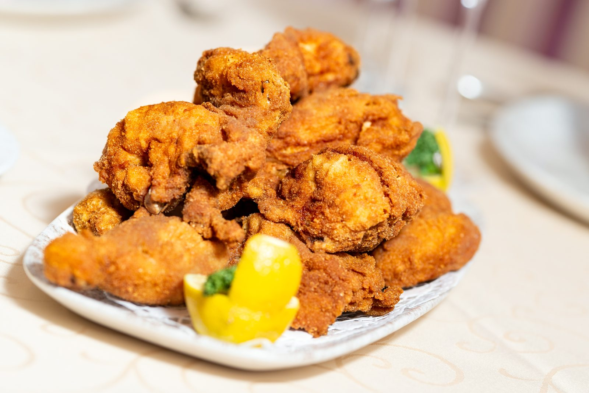
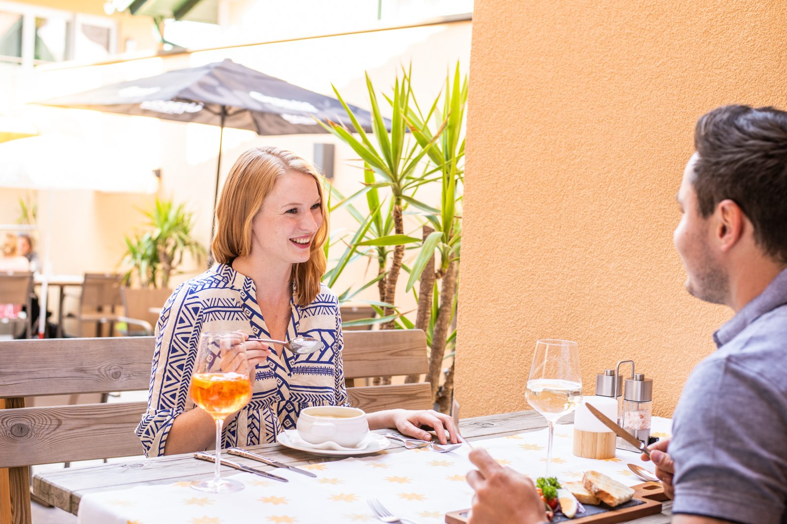

Wirtshaus
So urig fühlt sich Essen richtig gut an.
Traditionell gute Küche in gemütlich-uriger Umgebung – dafür steht der Gasthof Pendl seit über 100 Jahren im Herzen von Kalsdorf.

Unsere Küche
Essen unter Freunden – gemütlich, urig, g’schmackig
Bei uns kann man nicht essen wie Gott in Frankreich. Nein – viel besser! Auf unsere Speisekarte kommen nur die besten Schmankerl aus der guten, alten Hausmannskost. Gerade so, wie von Oma gezaubert. Und perfekt ergänzt durch besondere Empfehlungen, die für kulinarische Abwechslung sorgen.
Als Mitgliedsbetrieb beim Steirischen Wirtshaus kochen wir in der Tradition der Region. Was auf den Teller kommt, wechselt mit der Saison und mit dem Menüplan der Woche. Ein Teil der Zutaten stammt aus der eigenen Landwirtschaft.
Gruppen und Gesellschaften: Für größere Tische stellen wir auf Wunsch ein Menü zusammen. Sagen Sie uns Anlass, Personenzahl und Zeitrahmen – am besten über die Feier-Anfrage.
Draußen sitzen
Der überdachte Gastgarten
Schirme, Grün und Holztische: Im überdachten Gastgarten sitzen Sie auch dann angenehm im Freien, wenn das Wetter unentschlossen ist. Ein Aperitif vor dem Essen, ein langer Nachmittag danach – hier geht beides.
- Überdacht und beschattet
- Direkt beim Haus im Ortszentrum
- Auch für kleinere Gruppen reservierbar

Unsere Räume
Für jeden Gast der richtige Rückzugsort
Gut kochen können viele. Ein richtig gemütliches Wohlambiente schaffen eher wenige. Worin unser Geheimnis liegt? Ganz einfach: Der Gasthof Pendl ist sich selbst treu geblieben. Nicht übertrieben schick, sondern urig gesellig.
Unsere vielen verschiedenen Räume bieten jedem Gast und jedem Anlass den richtigen Platz. Stammtischrunden gefällt’s genauso gut wie Familien beim Sonntagsschmaus, Seminargästen genauso wie Hochzeitsgesellschaften. Uns ist jeder willkommen – und genauso fühlt es sich auch an.
Themenabende
Damit das Glück Ihres Magens perfekt ist, laden wir außerdem regelmäßig zu Themenabenden ein. Vom Wildessen über Steakwochen bis hin zu italienischen Abenden ist alles dabei, was Leib und Seele zusammenhält.
Wann der nächste Themenabend stattfindet, steht im Menüplan und im Newsletter – oder Sie fragen einfach im Service nach.
Selbstgemachtes
So schmeckt die Steiermark aus Pendls Garten
Unsere Wurzeln haben wir nie vergessen. Die Landwirtschaft mit ihren frischen, regionalen Produkten ist und bleibt unsere – gar nicht mehr so heimliche – Leidenschaft. Darum verpacken wir, was mit viel Liebe auf unseren Feldern gedeiht, in feine Leckereien.
Unser natürliches Kernöl für Naturburschen ist die Krönung für jeden Salat – zum Verschenken oder einfach selbst genießen. Auf Wunsch schicken wir Ihnen unsere steirische Leckerei auch gerne direkt nach Hause.
- Produkt
- Steirisches Kürbiskernöl aus eigener Landwirtschaft
- Bestellung
- bestellung@hotel-pendl.at oder telefonisch
- Versand
- Preise zuzüglich Versandkosten
- Landwirt
- Jürgen Pendl, Walther-Kamschal-Platz 7, 8401 Kalsdorf
Preise: Die aktuellen Kernölpreise veröffentlicht der Betrieb nicht online – wir nennen deshalb keine. Sie erhalten sie mit der Antwort auf Ihre Bestellanfrage.
Bestellungen gehen im Live-Betrieb an bestellung@hotel-pendl.at. Telefonisch: +43 3135 52 308, Fax +43 3135 55 900.